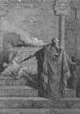

Yahudilerin ışık bayramının (Hanukah) kökenleri MÖ 2. yy’a kadar dayanmaktadır. Her yıl ışık bayramında Mattathias adındaki bir rahibin başlattığı ve Kudüs Tapınağı’nın yeniden Yahudilerin eline geçmesini sağlayan isyanın zaferini kutlamaktadırlar. İsyandan muzaffer olarak çıkan Yahudiler, tapınağı sadece bir gün yetecek olan yağla sekiz gün boyunca aydınlatmayı başarmışlardır. Bu mucize her yıl menorah (yedi kollu şamdan) yakarak kutlanır.

İsyanın başladığı MÖ 167 yılında Kudüs, Yunanca konuşan Seleucid İmparatorluğu’nun egemenliğindeydi. Pek çok Yahudi, Yunan geleneklerini benimsemiş ve hatta Yunan tanrılarına tapmaya başlamıştı. Bu durum Yahudi toplumunda anlaşmazlıklara neden oldu. O yıl Seleucid Kralı 4. Antiochus (MÖ 215-164), sünnet ve Sabbath gününün de aralarında bulunduğu kimi Yahudi adetlerini yasaklayarak bu anlaşmazlığın derinleşmesine neden oldu.
İncil’de anlatılanlara göre Mattathias, antik Yahudaizmin dini merkezi olan tapınakta bir rahipti. Mattathias Kudüs’te yapılanlardan dolayı çok öfkeliydi. “Ben bunları, insanlarımın ve kutsal şehrin çöküşünü, görmek için mi dünyaya geldim?” diye soruyordu. Yunan tanrılarına tapan bir Yahudi’yi öldürerek isyanın başlamasına neden oldu. Aynı zamanda Antiochus’un yeni emirlerini uygulamak için gönderilen bir Seleucid memurunu da öldürdü. Ardından insanları birlik olmaya çağırdı: “Geleneklere sadık olan ve ahdi destekleyen kim varsa benimle gelsin!”.
İsyan yaklaşık yedi yıl sürdü. Ne var ki Mattathias, Yahudiler’in zaferini görecek kadar uzun yaşamadı. MÖ 166 yılında öldü. Davasını oğlları devam ettirdi. Seleucidler’i bölgeden çıkarıp tapınağı kurtardılar. MÖ 160 yılında Maccabean Hanedanı kuruldu. Hanedan MÖ 63 yılına kadar bağımsız bir Yahudi devleti olarak hüküm sürdü.
Ek Bilgiler
1- Kudüs Tapınağı, Romalılar tarafından MS 70 yılında tahrip edildi. Kudüs’teki ünlü Batı Duvarı, tapınaktan geriye kalan son parçadır.
2- Maccabee, İbranice’de çekiç anlamına gelir. Mattathias ailesinin bu adı almasının nedeni, düşmanlarının üzerine bir çekiç gibi darbe indirdiklerine inanılmasıydı.
3- Mattathias Kudüs’le Tel Aviv arasında kalan Modin şehrinde dünyaya geldi. Ölümünün ardından orada bir mezara gömüldü. Ne var ki antik şehre ait tüm izler günümüzde ortadan kalkmıştır.